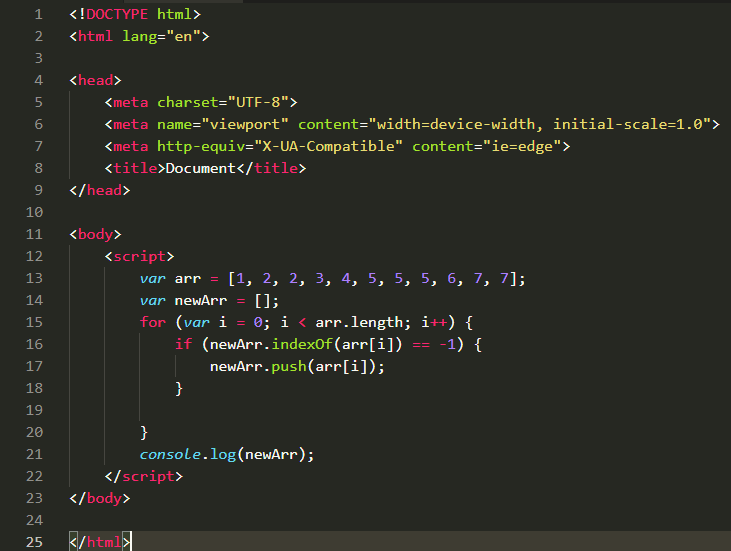

indexOf() 方法可返回某个指定的字符串值在字符串中首次出现的位置。
语法
stringObject.indexOf(searchvalue,fromindex)
参数
searchvalue 必需，规定需检索的字符串值。
fromindex 可选的整数参数。规定在字符串中开始检索的位置。它的合法取值是 0 到 stringObject.length - 1。如省略该参数，则将从字符串的首字符开始检索。
说明
该方法将从头到尾地检索字符串 stringObject，看它是否含有子串 searchvalue。开始检索的位置在字符串的 fromindex 处或字符串的开头（没有指定 fromindex 时）。如果找到一个 searchvalue，则返回 searchvalue 的第一次出现的位置。stringObject 中的字符位置是从 0 开始的。
提示和注释
indexOf() 方法对大小写敏感！
如果要检索的字符串值没有出现，则该方法返回 -1。
实例
在本例中，我们将在 "Hello world!" 字符串内进行不同的检索：
1 <script type="text/javascript">
2
3 var str="Hello world!"
4 document.write(str.indexOf("Hello") + "<br />")
5 document.write(str.indexOf("World") + "<br />")
6 document.write(str.indexOf("world"))
7
8 </script>.
以上代码的输出：
0
-1
6
接下来，我们运用indexOf方法来实现数组去重的操作 1 <script>
2 var arr = [1, 2, 2, 3, 4, 5, 5, 5, 6, 7, 7];
3 var newArr = [];
4 for (var i = 0; i < arr.length; i++) {
5 if (newArr.indexOf(arr[i]) == -1) { //从头到尾检索newArr,检查它里面是否含有arr[i]
6 newArr.push(arr[i]);//如果没有arr[i]，则将arr[i]插入到newArr中去
7 }
8
9 }
10 console.log(newArr);
11 </script>最终newArr结果为：
[1,2,3,4,5,6,7]
附上源代码图片

还可以使用splice方法去重，具体该怎么做，看后期的更新。。。
-----------------------------------------------------
------------------------------------------------------